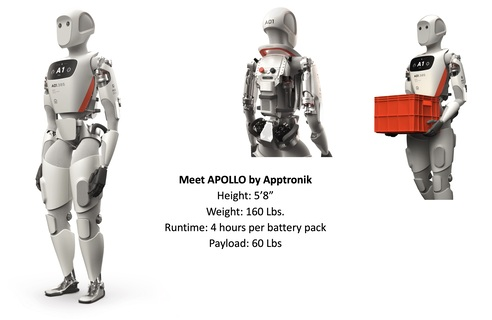

Muhammad Ali: The greatest boxer of all time

Michael Jordan: Just do It
| Table header one | Table header two |
|---|---|
| Row One inside td | Second Column inside td |
| Row Two inside td | Second Column inside td |

“Here's to the crazy ones.
The misfits. The rebels. The troublemakers. The round pegs in the square holes. The ones who see things differently. They're not fond of rules. And they have no respect for the status quo. You can quote them, disagree with them, glorify or vilify them. About the only thing you can't do is ignore them. Because they change things. They push the human race forward. And while some may see them as the crazy ones, we see genius. Because the people who are crazy enough to think they can change the world, are the ones who do.”| <header> | |
| <nav> | |
| <section> | <aside> |
| <article> | |
| Marketing Tools | |
| navigation list
|
|
|

|
<aside> The future never looks so Good. |
| <article> The future of merging humanoid with AI is a topic of much debate and speculation. Some potential developments that could shape this future include: Brain-Computer Interfaces (BCIs): Allowing humans to control devices with their minds. Neural Networks: Mimicking human brain structure and function in AI systems. Robotics and Embodiment: Integrating AI into humanoid robots for enhanced interaction and cognition. Cognitive Architectures: Developing frameworks for human-AI collaboration and knowledge sharing. Ethical Considerations: Addressing concerns around consciousness, free will, and accountability in merged human-AI entities. The possibilities range from enhanced human capabilities to potential new forms of intelligent life. However, this path also raises important ethical and societal questions that need to be addressed. |
|